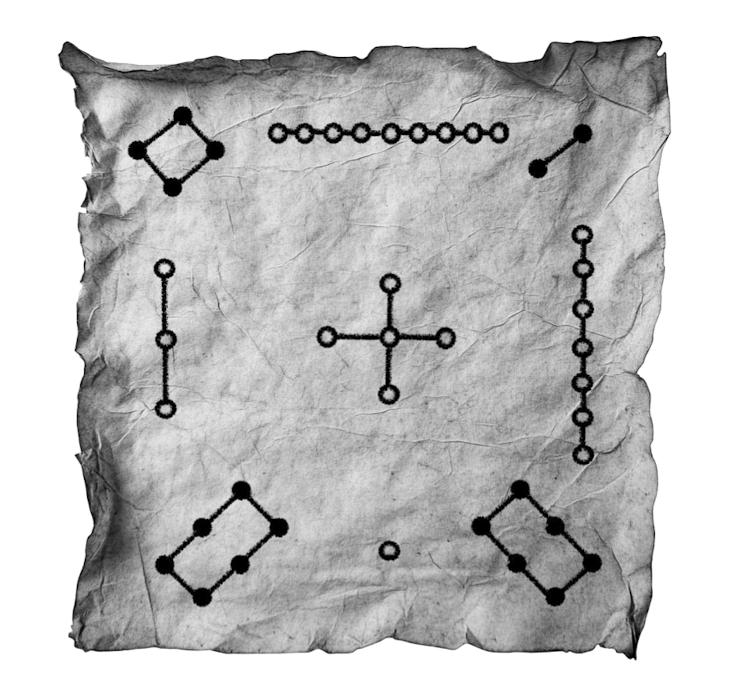

Can Crows Count?
There are many animals that appear to recognize quantities. An old story about crows gives us a particularly interesting example.
A hunter had a hut near his fields where he would hide to shoot crows that came to eat his crops. The crows learned his trick. When they saw the hunter enter the hut, they stayed away until they saw him leave.
The hunter tried to fool them. He brought a friend into the hut with him. After a while, one person left—but the crows did not return. Apparently, they knew that someone was still inside.
The hunter tried again with three people, having them leave one at a time. Again the crows stayed away until the last person had left. He continued increasing the number. According to one version of the story, only when the number reached six did the crows finally lose track. Other versions put the limit as high as sixteen.
We do not know whether this really happened. The story has been told in many forms and is not an experiment. But it raises an interesting question:
Can crows count?
Perhaps what the story describes is subitizing—the ability to recognize a small quantity without consciously counting its members.
But that raises another question:
Is recognizing “three” the same thing as having the abstract concept of the number three?
Whatever the answer is for crows, humans went considerably further. We developed ways not only to recognize quantities, but to represent them.
Numbers and Numerals
Consider:
five
5
V
|||||
These are not four different numbers. They are four different ways of representing the same number.
A number is an abstract mathematical object.
A numeral is a symbol, or collection of symbols, used to represent a number.
A systematic way of using such symbols is called a numeral system.
And there is no single inevitable way to construct one.
From Tallies to Groups
In Passus 0:0 we saw one of the simplest ways of recording a quantity: make one mark for every object being counted.
But what happens when the number of marks becomes large?
|||||||||||||||||||||||
might become
||||| ||||| ||||| ||||| |||
Now we can recognize four groups of five and three additional marks much more easily.
Grouping does more than make tallies easier to read. We have begun to think not only in ones, but in groups of five.
Why five?
Our hands provide one obvious answer. Ten is another natural choice because most of us have ten fingers.
But mathematics does not require us to use either one.
A Visit from Outer Space
Suppose an alien civilization on a distant planet—in a distant solar system, of course—uses the following base-five notation.
Naturally, the aliens have two hands with two and a half fingers each.
| Symbol | Value |
|---|---|
% | 1 |
# | 5 |
& | 25 |
$ | 125 |
@ | 625 |
No symbol may be repeated more than four times.
Thus, in Alienese,
18 = ###%%%
because
18 = 5 + 5 + 5 + 1 + 1 + 1,
and
47 = &####%%
because
47 = 25 + 5 + 5 + 5 + 5 + 1 + 1.
Question 1. In Alienese, do ###%%% and %%%### represent the same number? Why?
Question 2. What is the largest number that can be written in Alienese?
Do not just calculate it. How do you know that your answer really is the largest possible number?
The alien system is based on successive powers of five:
1, 5, 25, 125, 625.
But the position of a symbol does not change its value. The symbol # means 5 wherever it appears.
Alienese is therefore based on powers of five, but it is not positional.
When Position Matters
Our familiar numeral system works differently.
Consider 555.
The same symbol occurs three times, but the three occurrences do not have the same value:
555 = 5 · 100 + 5 · 10 + 5.
The first 5 represents five hundreds, the second five tens, and the third five ones.
More generally,
3854 = 3 · 103 + 8 · 102 + 5 · 101 + 4 · 100.
The value of a digit depends both on which digit it is and where it occurs.
This is a positional numeral system.
And because the positions correspond to powers of ten, ours is a base-ten positional numeral system.
But ten is not mathematically privileged.
Other Bases
Suppose we use base three.
There are only three available digits:
0, 1, 2.
The positions correspond to powers of three:
1, 3, 9, 27, 81, 243, …
Thus (120120)3 means
1 · 35 + 2 · 34 + 0 · 33 + 1 · 32 + 2 · 3 + 0,
so
(120120)3 = 420.
The subscript tells us the base in which the numeral is written.
From a Number to Its Representation
Suppose we want to write 19 in base four.
The powers of four are
1, 4, 16, 64, …
The largest power of four not exceeding 19 is 16.
19 = 1 · 16 + 3.
There are no 4s in the remainder, so
19 = 1 · 42 + 0 · 4 + 3.
Therefore,
19 = (103)4.
Notice the zero. It tells us that there are no fours, while preserving the positions of the other digits.
That is one of the jobs zero performs in a positional numeral system.
There is much more to the story of zero—but that story will have to wait.
Another Way: Division
There is another systematic way to find the digits of a numeral.
The Division Algorithm says that if we divide an integer n by a positive integer b, we can write
n = bq + r, 0 ≤ r < b.
The remainder is unique.
To write 19 in base three, repeatedly divide by 3:
19 = 3(6) + 1
6 = 3(2) + 0
2 = 3(0) + 2.
The remainders, read from bottom to top, give
19 = (201)3.
Why?
19 = 3[3(2) + 0] + 1 = 2 · 32 + 0 · 3 + 1.
The two methods approach the same problem from opposite directions.
Using powers of the base finds the digits beginning with the leftmost digit.
Repeated division finds them beginning with the rightmost digit.
The Base Representation Theorem
This is not an accident.
Base Representation Theorem. For every integer b ≥ 2, every positive integer can be represented uniquely in base b, using the digits
0, 1, …, b − 1.
More precisely, every positive integer n can be written uniquely as
n = akbk + ak−1bk−1 + ··· + a1b + a0,
where
0 ≤ ai < b
and ak ≠ 0.
The Division Algorithm gives us both a way to find these digits and the reason that the representation is unique.
Does Decimal Have to Be the Middleman?
We now know that
19 = (201)3
and
19 = (103)4.
We could therefore write
(201)3 = (103)4.
Did we really have to convert the base-three numeral to decimal first?
No.
There is nothing mathematically special about decimal. We could perform arithmetic directly in base three and convert directly to another base.
Decimal is simply convenient because it is the numeral system in which most of us are accustomed to doing arithmetic.
For example,
19 = (201)3 = (103)4 = (34)5.
The representations change.
The number does not.
A Number in Disguise

This ancient Chinese diagram is associated with the Lo Shu legend.
Before translating it into our familiar numerals, look at it.
What do you notice?
Can you determine what numbers the groups of dots represent?
Written with our numerals, the diagram becomes
| 4 | 9 | 2 |
| 3 | 5 | 7 |
| 8 | 1 | 6 |
Now something remarkable appears.
Add the numbers in any row:
4 + 9 + 2 = 15.
Any column:
4 + 3 + 8 = 15.
Or either diagonal:
4 + 5 + 6 = 15.
Every row, every column, and both diagonals have the same sum.
This is a magic square.
Magic configurations became an important subject of study in Chinese mathematics. Centuries later, the mathematician Yang Hui investigated methods for constructing magic squares and other magic configurations.
But for us, the Lo Shu has another lesson.
The dots looked unfamiliar. The arrangement looked unfamiliar. Once we understood the representation, however, the mathematics was perfectly recognizable.
One Number, Many Numerals
Seven remains prime whether we write it as
7, VII, (111)2,
or represent it in some notation we have not yet encountered.
A number is not the symbol we use to write it.
A numeral system gives us a language for representing numbers—and human beings have invented many such languages.
Which leaves us with the question that will take us into the historical part of our story:
If the numbers are the same, why have people invented so many different ways of writing them?
References
- Cummings, Jay. Math History: A Long-Form Mathematics Textbook. Independently published, 2025.
- Lewinter, Marty, and William Widulski. The Saga of Mathematics: A Brief History. Prentice Hall, 2002.